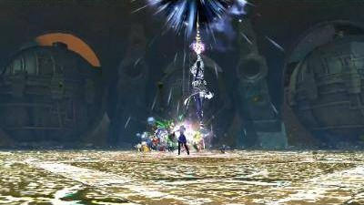
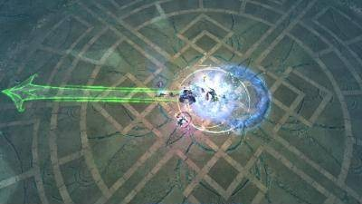
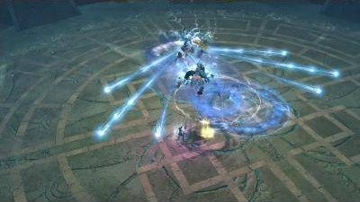
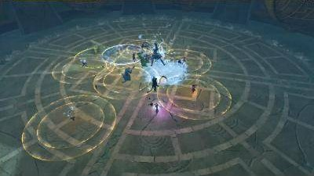

Der Kampf beginnt mit Planet Crash: Bar nicht gebrochen = Wipe; jeder Break erhöht die nächste Bar (Planetary Weight). Dagda hat 10 Stacks Demonic Aura (je –10 % erlittener Schaden): Purifying Light (Spezialaktionstaste) auf Dagda entfernt 5 Stacks – nach 0 Stacks 20 s Pause, dann wieder 10.
2
Shooting Stars: Ziel stirbt
Fehlgeschlagen = Ziel tot + Infirmity für alle. 5 Spieler zwischen Ziel und Dagda; das Ziel geht einen Schritt zurück und bleibt stehen.
3
Spinning Nebula: nicht blockbar
Projektile geben Debilitated (bis 3 Stacks) und lassen sich im CM nicht blocken oder reflektieren. Pets, Mechs und Minions nahe am Spin sammeln Stacks.
4
Soul Feast: 5 Pfützen folgen dir
Ziel kitet sie weg von der Gruppe. Jeder Treffer = Residual Anxiety; bei 10 Stacks wird man feindlich (per CC oder Down zurückholen). Alle auf 10 = Fail.
5
Neu ab 75 %: Numbers & Greens
Charging Constellation: 5 Ziele, Extreme Vulnerability → weit verteilen (Aegis/Block negiert). Meteor Crash: 2 Greens, je 3 Spieler.
6
Splits & Demonic Blast
Demonic Blast stößt jetzt alle durch ein Schadensfeld zur Wand – sofort raus, ggf. durch die Segmente dodgen. Im Split Elite- und Champion-Tormented (Torment); Champions rufen immune Phantome (nur CC tötet sie) und launchen mit Tornados → zwischen den Treppen kämpfen. Ab 50 %: Demonic Pools (8 orange Kreise am Rand) geben Residual Anxiety.

① Planet Crash: CC!

② Shooting Stars: davorstellen③ Spinning Nebula⑤ verteilen (Fever/Numbers)
Details zum Nachschlagen
Hardstuck hat für Cosmic Observatory nur einen Normal-Mode-Guide. Texte nach Snow Crows (CM-Guide) und MetaBattle; die Bilder sind Hardstuck-NM-Standbilder – die Mechaniken sehen gleich aus.
Grundlagen
Planet Crash zum KampfstartShooting Stars: grüner Pfeil durchs Ziel
Hide Ally Visual Effects auf Hide None oder Only Show Squad – sonst fehlen Spread- und Stack-Anzeigen.
Purifying-Light-Felder (1–5) nicht alle sofort nehmen: der Skill hält 15 s nach dem Aufheben – später sammeln, dann schneller Aura abbauen.
Purifying Light tötet auch eine Soul Feast und macht ihr Feld harmlos.
Viel CC mitbringen; Stabi hilft in den Splits. Schatten-Effekte runter (Planet Crash blendet).
6,5 s Zeit, mindestens 5 Spieler zwischen Ziel und Dagda zu bringen.
Überschneidet es sich mit Purifying Light: Supports ohne Pfeil kümmern sich um die Aura.
Starburst ist im Hitbox Nahkampf, außerhalb ein Projektil – am Rand des Hitbox trifft beides.
Phasen

Spinning Nebula: Mitte oder seitlicher Fächer

Spreads sauber verteilen
100–90 %: Auto → Shooting Stars (2×), dann Nebula. Bei 90 % Demonic Blast: zwischen die orangen Segmente; Fehler = Debilitated + 3 Residual Anxiety + Tormented-Add.
Große Spanne zwischen Ø und Top-DPS → als Support und als (Boon-)DPS gespielt.
Heal-Support
Troubadour, Luminary, Paragon, Druid
Ø-DPS unter 3,5k → in CM-Logs praktisch nur als Heiler/Support.
Komp-Tipp: Laut Wingman führen Mechanist und Virtuoso, dazu Harbinger, Scourge und Troubadour als Heiler. Snow Crows: der Kampf bevorzugt Ranged- und Condi-DPS, und jeder sollte viel CC mitnehmen.
Klassentipps – worauf du achten musst
Mechanik-Bezug aus dem Guide; die Klassenhinweise sind allgemeine Spieltipps. Für die neuesten Elite-Specs (z. B. Troubadour, Ritualist, Paragon, Luminary, Conduit, Evoker, Antiquary, Galeshot, Amalgam) gelten v. a. die Klassen-Grundregeln – prüfe die konkreten Skills im aktuellen Build.
Wächter
Firebrand · Luminary · Willbender · Dragonhunter
Firebrand: hoher Top-Wert, als Heiler/Boon-DPS.
Aegis negiert Numbers-Treffer.
Stabi für die Splits (Tornado-Launches).
Ingenieur
Mechanist · Amalgam · Scrapper · Holosmith
Mechanist: meistgespielt – Mech nicht in den Nebula-Spin stellen.